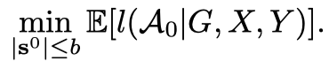

About
标题
ACTIVE LEARNING FOR GRAPH NEURAL NETWORKS VIA NODE FEATURE PROPAGATION
通过节点特征传播实现图神经网络的主动学习
来源
[2021 CVPR] Sequential Graph Convolutional Network for Active Learning 引用论文
ArXiv ICLR 2020
作者
Yuexin, Wu
Yichong, Xu：Ph.D. Carnegie Mellon University
Aarti, Singh：Associate Professor, Carnegie Mellon University
Yiming, Yang：Professor, Carnegie Mellon University
Artur, Dubrawski：Director, Carnegie Mellon University
机构
School of Computer Science, Machine Learning Department, Carnegie Mellon University
Content
相关工作
Active Learning
- 早期的基于图结构数据的主动学习，通过图正则化来研究无参分类模型
- 最近的研究是，开始分析在图信号处理框架中的主动采样
这些研究都是关注于图信号平滑但节点特征标签有噪声的情况
- optimal experimental design可以用于数据解决线性回归问题
但不能解决非线性无相关性标签的分类问题
Graph Neural Networks
- 图神经网络自2017年兴起，他的变种多是多层架构，在每一层传递节点信息
- 在最近的主动学习中使用GNN的研究中，提出了将不确定性、图中心性和信息密度线性结合，来获得最佳性能
- 再就是通过可学习的基于多臂老虎机技术的权重联合来优化结果
不同于结合不同参数的方法，本文从聚类传播节点特征作为切入。展示了我们的one-step主动设计在小标签环境下表现优于其他基于学习网络表现，并在大量标注数据中也不会降低表现
准备
\(V = \{ 1, 2, ..., n\}\)
\( G(V,E) = \begin{cases} x_i \in \mathcal{X} \subseteq \mathbb{R} ^d \\ y_i \in \mathcal{Y}=\{1,2,...,c\} \end{cases}\)
\(x_i\) 是特征向量，\(y_i\) 是标签
输入
\(X = \begin{pmatrix} 1111\\2222\\....\\nnnn \end{pmatrix}_{n \times x}\) 一行就是一个节点的特征，一共n行
\(Y= \begin{pmatrix} y_1,y_2,...,y_n \end{pmatrix}\) 每一个节点的标签
损失函数
\(\mathcal{L} (\mathcal{M} \mid G,X,Y) : \mathcal{M}\) 通过匹配G和X来预测向量 \(\hat{Y} \in \mathcal{Y}^n\)
Step t
-
选一个子集 \(S^t \subseteq \{1,2, ...,n\}\)
-
\(S^t\) 中每一个数都对应一个随机选择的 \(y_i\)
-
用 \(\eta_c(v)\) 表示节点v获得 y=c 的概率，则有 \(\eta(v) = (\eta_1(v),...,\eta_c(v))^T\)
-
主动学习算法 \(\mathcal{A}\) 使用G, X和 \(y_i\) 对 \(i\in S^0 \bigcup S^1 \bigcup ... \bigcup S^t\) 作为训练集训练模型，使用训练算法 \(\mathcal{M}\) ，训练好的模型称为 \(\mathcal{M}_{A_t}\)，如果所有主动学习策略都用的训练算法 \(\mathcal{M}\)，那么就直接把\(\mathcal{M}_{A_t}\) 简写成\( \mathcal{A}_t\)
-
我们的目标函数就成了 \(\min _{\mathbf{s}^0 \cup \cdots \cup \mathbf{s}^t} \mathbb{E}\left[l\left(\mathcal{A}_t \mid G, X, Y\right)\right]\) 由Y和 \(\mathcal{A}\) 提供随机性
**我们要让图神经网络做\(\mathcal{M}\) **
图神经网络框架
图神经网络定义了一个多层特征传播过程就类似于MLPs，定义第k层表征矩阵为 \(X^{(k)}\)，\( X^{(0)}\) 就是输入的节点特征
不同之处就是它定义的下层表示的递归函数
而图卷积网络则定义为
通过添加身份矩阵，类似于MLPs中的残差链接，绕过浅层表征到深层。GCN鼓励这样的到的深层表征共享
对于分类任务，常使用一个softmax方法作为最后一层
我们使用GCN作为统一 \(\mathcal{M}\) 模型在接下来的AL策略中
AL策略和理论分析
传统的AL算法一次只选一个实例进行标注，我们关注到“batch” one-step主动学习，一次性选出对所有节点有丰富信息的节点（也称为optimal experimental design），选取b个最有代表的节点作为batch，我们的目标函数就变成了

FeatProp 算法描述
输入：特征矩阵X ，图矩阵G，预算b
- 计算距离 \(d_{X,G}\)
- 使用b中心的 \(d_{X,G}\) 矩阵做聚类
- 挑选最接近聚类中心的\(s\)作为中心
- 获得\(s\)中节点v们的标签 然后训练\(\mathcal{M}\)（GCN）
输出：模型\(\mathcal{M}\)
距离方法
传统做法：$d_{(X,G)}(V_i,V_j) = |(S^KX)_i-(S^KX)_j|_2$
对well-trained的网络有帮助，在训练初期非常不准确，选择不出有代表的节点，我们使用的是：
\(S^KX\) 类似于去掉所有激活函数和层参数的简化GCN，这样可以去掉没训练的参数对距离计算的影响，依旧带着图结构进入计算，并且选出的节点会有很强的归纳偏置
聚类方法
- K-Means: 生成的中心节点可能是不存在的，就没办法进行label了
- K-Center
- K-Medoids: 类似于K-Means，但是选出的节点一定是真实存在的
分类损失边界理论分析
Coreset 方法：找到一个训练集的 \(\delta-over\)

由于 ，所以可以看出K-Medoids比K-Center可以获得一个更好的边界
K-Medoids对于红线平均值，而K-Center对应红线最大值
实验
- 跑了四个网络数据集结果，CoraFull是一个高密度网络数据集，来描述在大尺度环境下的表现
- 比较使用FeatProp和Coreset算法使用的时间
- 在不同数量（10,20,40,80,160）的预算节点进行训练的平均Macro-F1
-
与基线方法进行比较
实验结果
我们一开始从池子里随机选出五个节点，使用五个不同的随机种子节点，将他们的平均分类准确率作为度量，实验结果均优于其他方法
未来工作
FeatProp 仅侧重于对有意义的（图形）表示中的代表点进行采样，而基于不确定性的方法式从由标签引导的不同标准中选择主动节点，如何以有原则的方式将该类方法与 FeatProp 结合仍然是一个开放有趣的问题。
想法
本文没有入选的原因可能在于只提出了一个算法但没有实际应用，创新点不足，结构不完整。但GCN+AL在少标签的聚类工作中仍有很大的用武之地。相比消耗巨大的transformer，我觉得GCN更适合装备不足的情况，通过框架解决算力问题。上周的文章的framework依旧是我的basement。